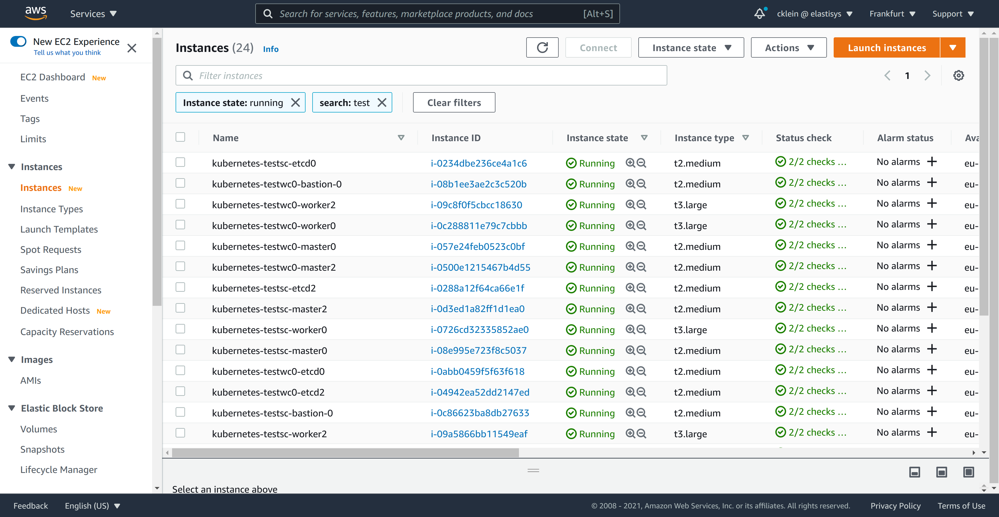

Compliant Kubernetes Deployment on AWS
This document describes how to set up Compliant Kubernetes on AWS. The setup has two major parts:
- Deploying at least two vanilla Kubernetes clusters
- Deploying Compliant Kubernetes apps
Before starting, make sure you have all necessary tools.
Setup
Choose names for your service cluster and workload clusters, as well as the DNS domain to expose the services inside the service cluster:
SERVICE_CLUSTER="testsc"
WORKLOAD_CLUSTERS="testwc0"
BASE_DOMAIN="example.com"
Note
If you want to set up multiple workload clusters you can add more names.
E.g. WORKLOAD_CLUSTERS="testwc0 testwc1 testwc2"
SERVICE_CLUSTER and each entry in WORKLOAD_CLUSTERS must be maximum 17 characters long.
Deploying vanilla Kubernetes clusters
We suggest to set up Kubernetes clusters using kubespray. If you haven't done so already, clone the Elastisys Compliant Kubernetes Kubespray repo as follows:
git clone --recursive https://github.com/elastisys/compliantkubernetes-kubespray
cd compliantkubernetes-kubespray
Infrastructure Setup using Terraform
-
Expose AWS credentials to Terraform.
We suggest exposing AWS credentials to Terraform via environment variables, so they are not accidentally left on the file-system:
export TF_VAR_AWS_ACCESS_KEY_ID="xyz" # Access key for AWS export TF_VAR_AWS_SECRET_ACCESS_KEY="zyx" # Secret key for AWS export TF_VAR_AWS_SSH_KEY_NAME="foo" # Name of the AWS key pair to use for the EC2 instances export TF_VAR_AWS_DEFAULT_REGION="bar" # Region to use for all AWS resourcesTip
We suggest generating the SSH key locally, then importing it to AWS.
-
Customize your infrastructure.
Create a configuration for the service cluster and the workload cluster:
pushd kubespray for CLUSTER in $SERVICE_CLUSTER $WORKLOAD_CLUSTERS; do cat contrib/terraform/aws/terraform.tfvars \ | sed \ -e "s@^aws_cluster_name =.*@aws_cluster_name = \"$CLUSTER\"@" \ -e "s@^inventory_file =.*@inventory_file = \"../../../inventory/hosts-$CLUSTER\"@" \ -e "s@^aws_kube_worker_size =.*@aws_kube_worker_size = \"t3.large\"@" \ > inventory/terraform-$CLUSTER.tfvars done popdReview and, if needed, adjust the files in
kubespray/inventory/. -
Initialize and Apply Terraform.
pushd kubespray/contrib/terraform/aws terraform init for CLUSTER in $SERVICE_CLUSTER $WORKLOAD_CLUSTERS; do terraform apply \ -var-file=../../../inventory/terraform-$CLUSTER.tfvars \ -auto-approve \ -state=../../../inventory/tfstate-$CLUSTER.tfstate done popdImportant
The Terraform state is stored in
kubespray/inventory/tfstate-*. It is precious. Consider backing it up or using Terraform Cloud. -
Check that the Ansible inventory was properly generated.
ls -l kubespray/inventory/hosts-*You may also want to check the AWS Console if the infrastructure was created correctly:

Deploying vanilla Kubernetes clusters using Kubespray.
With the infrastructure provisioned, we can now deploy both the sc and wc Kubernetes clusters using kubespray. Before trying any of the steps, make sure you are in the repo's root folder.
-
Init the Kubespray config in your config path.
export CK8S_CONFIG_PATH=~/.ck8s/aws export CK8S_PGP_FP=<your GPG key fingerprint> # retrieve with gpg --list-secret-keysfor CLUSTER in $SERVICE_CLUSTER $WORKLOAD_CLUSTERS; do ./bin/ck8s-kubespray init $CLUSTER aws $CK8S_PGP_FP doneImportant
The key in
~/.ssh/id_rsamust be the private key of the key referenced inTF_VAR_AWS_SSH_KEY_NAMEabove. -
Copy the inventories generated by Terraform above in the right place.
for CLUSTER in $SERVICE_CLUSTER $WORKLOAD_CLUSTERS; do cp kubespray/inventory/hosts-$CLUSTER $CK8S_CONFIG_PATH/$CLUSTER-config/inventory.ini done -
Run kubespray to deploy the Kubernetes clusters.
for CLUSTER in $SERVICE_CLUSTER $WORKLOAD_CLUSTERS; do ./bin/ck8s-kubespray apply $CLUSTER --flush-cache -e ansible_user=ubuntu doneThis may take up to 20 minutes per cluster.
-
Correct the Kubernetes API IP addresses.
Find the DNS names of the load balancers fronting the API servers:
grep apiserver_loadbalancer $CK8S_CONFIG_PATH/*-config/inventory.iniLocate the encrypted kubeconfigs
kube_config_*.yamland edit them using sops. Copy the URL of the load balancer from inventory files shown above intokube_config_*.yaml. Do not overwrite the port.for CLUSTER in $SERVICE_CLUSTER $WORKLOAD_CLUSTERS; do sops $CK8S_CONFIG_PATH/.state/kube_config_$CLUSTER.yaml done -
Test access to the clusters as follows:
for CLUSTER in $SERVICE_CLUSTER $WORKLOAD_CLUSTERS; do sops exec-file $CK8S_CONFIG_PATH/.state/kube_config_$CLUSTER.yaml \ 'kubectl --kubeconfig {} get nodes' done
Deploying Compliant Kubernetes Apps
Now that the Kubernetes clusters are up and running, we are ready to install the Compliant Kubernetes apps.
-
If you haven't done so already, clone the Compliant Kubernetes apps repo and install pre-requisites.
git clone https://github.com/elastisys/compliantkubernetes-apps.git cd compliantkubernetes-apps ansible-playbook -e 'ansible_python_interpreter=/usr/bin/python3' --ask-become-pass --connection local --inventory 127.0.0.1, get-requirements.yaml -
Initialize the apps configuration.
export CK8S_ENVIRONMENT_NAME=aws #export CK8S_FLAVOR=[dev|prod] # defaults to dev export CK8S_CONFIG_PATH=~/.ck8s/aws export CK8S_CLOUD_PROVIDER=aws export CK8S_PGP_FP=<your GPG key fingerprint> # retrieve with gpg --list-secret-keys ./bin/ck8s initThree files,
sc-config.yamlandwc-config.yaml, andsecrets.yaml, were generated in the$CK8S_CONFIG_PATHdirectory.ls -l $CK8S_CONFIG_PATH -
Configure the apps.
Edit the configuration files
sc-config.yaml,wc-config.yamlandsecrets.yamland set the appropriate values for some of the configuration fields. Note that, the latter is encrypted.vim $CK8S_CONFIG_PATH/sc-config.yaml vim $CK8S_CONFIG_PATH/wc-config.yaml sops $CK8S_CONFIG_PATH/secrets.yamlThe following are the minimum change you should perform:
# sc-config.yaml and wc-config.yaml global: baseDomain: "set-me" # set to $BASE_DOMAIN opsDomain: "set-me" # set to ops.$BASE_DOMAIN issuer: letsencrypt-prod objectStorage: type: "s3" s3: region: "set-me" # Region for S3 buckets, e.g, eu-central-1 regionEndpoint: "set-me" # e.g., https://s3.us-west-1.amazonaws.com fluentd: forwarder: useRegionEndpoint: "set-me" # set it to 'false' issuers: letsencrypt: email: "set-me" # set this to an email to receive LetsEncrypt notifications# secrets.yaml objectStorage: s3: accessKey: "set-me" #put your s3 accesskey secretKey: "set-me" #put your s3 secretKey -
Create placeholder DNS entries.
To avoid negative caching and other surprises. Create two placeholders as follows (feel free to use the "Import zone" feature of AWS Route53):
echo " *.$BASE_DOMAIN 60s A 203.0.113.123 *.ops.$BASE_DOMAIN 60s A 203.0.113.123 "NOTE: 203.0.113.123 is in TEST-NET-3 and okey to use as placeholder.
-
Installing Compliant Kubernetes apps.
Start with the service cluster:
ln -sf $CK8S_CONFIG_PATH/.state/kube_config_${SERVICE_CLUSTER}.yaml $CK8S_CONFIG_PATH/.state/kube_config_sc.yaml ./bin/ck8s apply sc # Respond "n" if you get a WARNThen the workload clusters:
for CLUSTER in $WORKLOAD_CLUSTERS; do ln -sf $CK8S_CONFIG_PATH/.state/kube_config_${CLUSTER}.yaml $CK8S_CONFIG_PATH/.state/kube_config_wc.yaml ./bin/ck8s apply wc # Respond "n" if you get a WARN doneNOTE: Leave sufficient time for the system to settle, e.g., request TLS certificates from LetsEncrypt, perhaps as much as 20 minutes.
-
Setup required DNS entries.
You will need to set up the following DNS entries. First, determine the public IP of the load-balancer fronting the Ingress controller of the service cluster:
SC_INGRESS_LB_HOSTNAME=$(sops exec-file $CK8S_CONFIG_PATH/.state/kube_config_sc.yaml 'kubectl --kubeconfig {} get -n ingress-nginx svc ingress-nginx-controller -o jsonpath={.status.loadBalancer.ingress[0].hostname}') SC_INGRESS_LB_IP=$(dig +short $SC_INGRESS_LB_HOSTNAME | head -1) echo $SC_INGRESS_LB_IPThen, import the following zone in AWS Route53:
echo """ *.ops.$BASE_DOMAIN 60s A $SC_INGRESS_LB_IP dex.$BASE_DOMAIN 60s A $SC_INGRESS_LB_IP grafana.$BASE_DOMAIN 60s A $SC_INGRESS_LB_IP harbor.$BASE_DOMAIN 60s A $SC_INGRESS_LB_IP kibana.$BASE_DOMAIN 60s A $SC_INGRESS_LB_IP """ -
Testing:
After completing the installation step you can test if the apps are properly installed and ready using the commands below.
./bin/ck8s test sc for CLUSTER in $WORKLOAD_CLUSTERS; do ln -sf $CK8S_CONFIG_PATH/.state/kube_config_${CLUSTER}.yaml $CK8S_CONFIG_PATH/.state/kube_config_wc.yaml ./bin/ck8s test wc done
Done. Navigate to grafana.$BASE_DOMAIN, kibana.$BASE_DOMAIN, harbor.$BASE_DOMAIN, etc. to discover Compliant Kubernetes's features.
Teardown
for CLUSTER in $WORKLOAD_CLUSTERS $SERVICE_CLUSTER; do
sops exec-file $CK8S_CONFIG_PATH/.state/kube_config_$CLUSTER.yaml \
'kubectl --kubeconfig {} delete --all-namespaces --all ingress,service,deployment,statefulset,daemonset,cronjob,job,pod,sa,secret,configmap'
done
# Feel free to skips this step, but remember to remove EBS volumes manually
# from the AWS Console, after Terraform teardown.
for CLUSTER in $WORKLOAD_CLUSTERS $SERVICE_CLUSTER; do
sops exec-file $CK8S_CONFIG_PATH/.state/kube_config_$CLUSTER.yaml \
'kubectl --kubeconfig {} delete --all-namespaces --all pvc,pv'
done
cd ../compliantkubernetes-kubespray
pushd kubespray/contrib/terraform/aws
for CLUSTER in $SERVICE_CLUSTER $WORKLOAD_CLUSTERS; do
terraform destroy \
-auto-approve \
-state=../../../inventory/tfstate-$CLUSTER.tfstate
done
popd